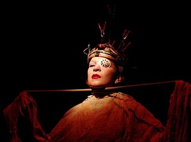

De la chica que quería ser Dios y otras conmociones mentales
Por: María G Pacheco Rojas
Perturbarse, dejarse ir, aniquilar los motivos que impiden ensoñar en el único e irrepetible acto de la vida.

Cuando el teatro toca la puerta de lo cotidiano y avasalla la rutina marcada por el trascurrir de días prácticos, no salimos ilesos a las ensoñaciones absurdas y conmovedoras de su “bioactuación”[1]. Cada hormona-neurona se nos sensibiliza delante de la cara y las palabras emitidas por los personajes, adquieren un sentido más allá de lo real y lo exacto. Así, el lenguaje se nos vuelve refugio, predicación de falsas verdades y ensoñaciones titiritantes en los parpados. Sentimos abandonarnos a los deseos malnacidos del saber, y por supuesto, reconocemos al discurso coloquial como un esclavo de la poesía.
Todo esto nos sucede, siempre y cuando la propuesta que se nos muestre presente evidencias electro cardiacas del arte, pues la ensoñación y la levitación solo es posible, a través de un trabajo honesto y veraz que haga que nos creamos esa mentira que nos están contando. Tal es el caso de “La chica que quería ser Dios” del teatro Matacandelas, pues este es uno de esos manifiestos artísticos que promueven dichos estados de reflexión y confrontación con la realidad. Su impacto, genera en los espectadores un momento de abstinencia verbal, pues salimos conmocionados en el bombardeo de metáforas y paráfrasis sobre la vida, el ser y la nada. Al compás de un Jazz, la imaginación “que es un músculo que se ejercita trabajando” –o algo así-, suele tomar su propio camino, y nos conduce por una vía extraña, a anhelar un propósito más que biológico en la existencia.
En esta medida, la observación consciente del trabajo del Matacandelas, nos presenta, precisión en los movimientos, voces avivadoras de sensaciones, culto a la imagen y a la escultura corporal, y distintos elementos dionisiacos que nos conmueve y nos invaden los sentidos. Cada texto enunciado y pronunciado trae consigo una carga densa de poesía. Así, en frases como: “Morir es un arte y yo lo hago excepcionalmente bien” la actriz que personifica a Silvia Plath nos permite respaldar la magia de la palabra en la mente humana; su excelente dicción, su disfrute inverosímil de las letras y la enunciación de cada texto de la poetiza, nos aprueba (a través de la ironía, el humor negro y las visiones románticas sobre el ser humano) ese dejarse llevar por la escena y sus designios.
La música que nos pone a tambalear el pie en cada melodía, no solo deja fluir la multiplicidad de sensaciones percibidas en la escena, sino que refuerza cada acción y las transiciones del momento teatral. Las luces nos trasportan de espacio en espacio permitiendo entretejer los tendones de la historia, y vale la pena decir que cada situación dramática está milimétricamente calculada por la versatilidad de los actores y por la mano creadora y edificadora del director.
Con todo, en esta síntesis de una espectadora conmovida e impactada por la fascinación de la obra, no sobra decir que ésta posee una riqueza en imagen, una fuerza textual impresionante, y una armonía de la música y la luz, como actantes activos de la caja negra. Desde luego todo esto no es otra cosa que años de trabajo, monumentos de experiencia en la investigación, pues no basta conocer las instalaciones y los portavoces del teatro Matacandelas, para darse cuenta, que cada acción se justifica a través de la literatura, las notas musicales y sobre todo la voz resonante de Bertolt Brecht.
[1] Neologismo utilizado para referirse a la actuación viva.
Fuente: http://acontistateatro.blogspot.com/2011/04/de-la-chica-que-queria-ser-dios-y-otras.html